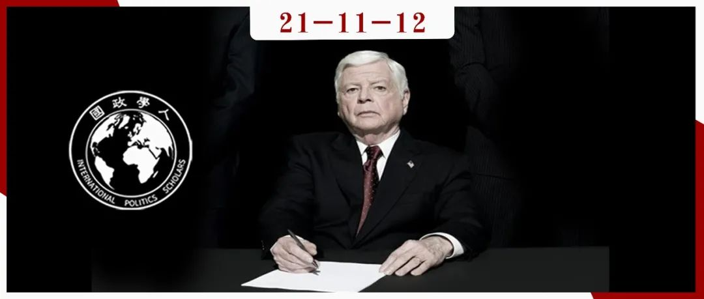

收录于合集
#国际关系 1 个
#《国际关系前沿》2021年第11期 18 个

作品简介
作者： Emilie M. Hafner- Burton，加州大学圣地亚哥分校(UCSD)国际关系与太平洋研究学院(IR/PS)教授，也是该学院国际法与法规实验室主任；D. Alex Hughes，国际法与法规实验室研究员，加州大学圣地亚哥分校政治系的博士候选人；David G. Victor，加州大学圣地亚哥分校全球政策与战略学院的创新与公共政策教授，创新和公共政策全球转型中心的主席。
编译： 孟晓宇（国政学人编译员，山东大学东北亚学院硕士）
来源： Hafner-Burton, Emilie M., D. Alex Hughes, and David G. Victor. “The cognitive revolution and the political psychology of elite decision making.” Perspectives on Politics 11.2 (2013): 368-386.
归档： 《国际关系前沿》2021年第11期，总第38期。

内容提要
认知心理学和行为经济学的实验证据正在改变政治学学者思考人类如何在具备高度复杂性、不确定性和风险性的领域做出决策的方式。有大量研究表明， 经验丰富的精英不但更有可能表现出理性决策的属性，也通常更加擅长战略谈判（strategic bargaining）；然而精英们也更有可能遭受过度自信的危害，这无疑会降低决策能力。
**
**本文以美国和朝鲜之间的危机谈判（crisis
bargaining）为案例来说明精英决策对政治学的影响。2002至2006年间，美国精英决策者的经验变化似乎更好地解释了美国危机信号的巨大转变，这比其它的假说具有更强的解释力。除了危机谈判之外，其它主要的政治学理论也可能受益于对个别决策者属性的关注。
文章导读
01
什么是精英？
精英的广义定义是在社会和政治结构中占据高位的少数决策者，那些“在其权力分支中拥有最高权威指数”并“对社会和政治变革产生重大影响”的人。精英与非精英在许多方面存在不同，并在两个维度体现了巨大差异。首先，通过捐赠、启动和遴选，精英们开始控制非精英人士无法享受的资源，如金钱和政治权力；其次，精英往往拥有大量特定背景下的经验，这种经验极大地影响了他们做出决策的方式。通常所有人都配备了完成复杂政治任务所需的硬件，但特定的经历影响了决策者有效利用这些硬件的能力。
02
战略决策科学：精英与非精英
认知心理学、神经生理学和实验经济学这三个松散联系的领域已经提出并检验了比有限理性（bounded rationality）和前景理论(prospect theory)更具有前瞻性的新理论。这些研究领域以不同的方式重申了这样一个结论，即人类远不是完全理性的。作者对这些领域进行了调查，发现了18个看似可能对政治决策产生重要影响的特征，作者重点关注了其中的六个特征，因为有一些证据表明，有经验的精英和没有经验的决策者的政治行为可能在这六个方面存在差异。
1.风险管理：经验丰富的精英不那么倾向于规避损失 ****
前景理论的一个核心发现是： 人们对风险的感知和管理是不对称的，而经验导致相对更对称的决策。 例如，经验丰富的精英不轻易厌恶损失（loss aversion），这使他们成为更好的赌徒。前景理论解释了为什么当人们处于“收益领域”（他们手中有珍视的东西）时会厌恶损失；它也解释了“损失领域”中的行为——当人们面临必然的损失时，他们倾向于选择风险更高的选项，希望大赌注能让他们扳回损失。
2.战略互动：经验丰富的精英可能更擅长玩迭代游戏
当出现决策情况时，每个人考虑的回合数不同，这在行为经济学文献中被称为“d次逆向归纳法（d-times backward induction）”。分数“d”反映了个人在第一轮做出选择之前进行反复选择的次数。由于时间偏好的不同，对游戏结构的认知不同以及个体理解、学习和应用能力的不同，人们的“d”分数也会存在差异。实验表明，在第一印象中，大约五分之一的参与者在迭代游戏中使用最佳均衡战略；而在反复游戏中，大约三分之二的人可以通过反复消除劣质策略来学习如何达到平衡。
03
战略互动：有经验的精英可能会更多地意识到其他玩家
人们对其他玩家在战略游戏中行为的了解程度称为“K级意识”（K-Level Awareness）。凯恩斯提出， “对他人的看法是战略决策的重要部分” ，最优策略在很大程度上取决于对其他参与者推理模式的揣测。
1.经验丰富的精英在处理复杂信息时更有效地使用启发式方法
许多研究都指向推理的双过程模式：相对较低的处理成本和更繁重的认知功能。为了简化讨论，作者仅阐述了“启发式- 系统”这一双过程模型。首先，“系统”过程是通过对信息进行密切而彻底的分析来做出决策，它最类似于充分掌握信息，并对新的事实作出全面、新的分析的决策者。它需要决策者投入充分的认知能力和能力资源，尤其是当他们面对一个新环境时。相对的，启发式方法过程是判断规则的激活和应用。这种决策模式在受试者遇到相似情况时是最典型的，受试者会依赖于容易处理的判断线索，而不是全面的分析。实验表明，即使受试者在有限时间内面临相对复杂和新颖的判断，他们也依赖于这种低成本的处理模式。几乎所有的个体都是认知吝啬者，他们以最低的认知努力寻求最高的回报，而效率取决于是否有足够的启发式方法。一些证据表明经验丰富的精英更善于选择“正确”的启发式方法，而且有经验的精英也能够比非精英更有效地修改甚至抛弃他们的启发式方法。
2.有经验的精英更容易过度自信
有经验的精英也可能比经验较少的人更自信，这可能会改变决策行为。虽然研究表明过度自信可能会起到相反的作用，然而过度自信的代价可能会被增强的意志力和积极性所带来的好处抵消。事实上，过度自信的行为可能是通过进化动机而发展起来的，这种动机鼓励本来不愿冒险的行动者去追求冒险的策略。例如，有学者发现：如果赢得竞争资源的收益与竞争的风险、成本相比足够大，过度自信可能在广泛的环境中趋于进化稳定（evolutionarily stable）。
3.经验丰富的精英可能会更倾向于合作
政治中的许多任务都需要合作，比如建立和维持执政联盟，或者与其他国家结成联盟。经验丰富的精英可能因为他们不那么讨厌失败，所以似乎也比经验较少的决策者更倾向于合作。
04
对决策理论的启示：一个应用
该部分将以危机谈判为例，探索以上关于认知心理学和行为经济学的见解是如何影响精英政治决策理论的。
1.危机谈判：信号和承诺 ****
危机谈判描述了国家行为者之间的战略性互动，当不能达成协议会导致代价高昂的结果时，他们会就如何分配领土和声望等稀缺资源进行讨价还价。现实世界的危机往往迅速发生，并涉及对国家安全和经济繁荣至关重要的秘密政策过程，因此关键的抉择通常只由政治权力最高的小团体甚至个人精英决策者做出。
危机谈判与不确定性、沟通效果这两个要素密切相关。因为我们对其他玩家偏好的了解是不完善的，所以危机谈判的最终结果总是带有不确定性。除此之外，危机谈判的结果通常取决于参与者之间沟通的可信度。双方都在倾听和观察对方，试图从虚张声势中辨别出真正的偏好，通信必须付出昂贵的代价才能传递清晰的信息；而无成本的沟通或“廉价谈话”则可能导致战略误判。
2.危机谈判行为因经验而异 ****
行为经济学和认知心理学的研究表明，经验至少可以通过六种不同的方式影响决策者。
第一是最为重要的前景理论的预测。如果玩家已经获得了有形的收益，那么玩家就会特别担心损失；如果玩家处于“亏损领域（domain of losses）”，那么人们可能会做出特别冒险的决定。这种不对称的风险承担是前景理论的本质，但实验证据表明它会随着经验的积累而下降，如果两个代理人都很有经验，那么双方都可能厌恶不确定且代价高昂的结果，无论他们是在收益领域还是在损失领域。
第二是来自迭代战略谈判的启示。“d次反向归纳法”的实验研究表明，经验丰富的决策者比经验不足的决策者更能通过长链的迭代战略进行决策优化。
第三是来自K- Level研究的洞察力。实验研究表明，经验丰富的玩家有较高的K水平平均数；在涉及大量玩家的危机中，经验丰富的玩家甚至会根据其他玩家的经验发出不同的信号。
第四是启发式方法在管理复杂决策中的作用。在玩家经验不同的危机中，最有经验的决策者可能会在场景中采用最有效的启发式方法，而其他决策者可能会采用不适当的启发式方法，或者使用速度更慢、更繁琐的方法。
第五是过度自信——对自己表现的不合理的积极评价。有经验的领导者可能会做出许多错误的评估，比如对自己的天赋过于乐观，或者对对手的技能不屑一顾。
第六是合作精神。无论回报和风险如何，合作参与者越多就越有可能达成共同协议来解决分歧。由经验丰富的参与者管理的争端可能会比预期的更早解决，并带来更多的互惠收益，而新手决策者则反之。
3.案例分析：美朝危机 ****
2002年和2006年朝美之间发生了两次危机。其一是2001年至2002年间，美国情报界称朝鲜秘密探索铀浓缩方案，其违反了1994年朝美核框架协议下的承诺。该事件引发了美国在2002年中与朝鲜的对抗，并且导致朝鲜退出了《不扩散核武器条约》（NPT）。其二是2006年10月，朝鲜进行了第一次核武器试验。尽管朝鲜政权在这段时间内保持稳定，由一位在危机谈判和边缘政策方面经验丰富的领袖领导，但应对这两场危机的美国政策制定者的经验却有了相当大的变化。
朝美两次危机是一个有意义的案例研究，因为它比较了缺乏经验和富有经验的决策者面对危机的实际信号和反应。前文确定了六种能够改变决策的行为特征，在这一部分作者重点考察了其中的四个行为特征。
（1）前景理论与风险管理
**
**
2001年9月11日基地组织的袭击影响了布什政府对朝鲜半岛事件得失的看法。在9月11日之前，布什团队认为与朝鲜的谈判是不可取的；9月11日之后，谈判结果更加糟糕，在2002年1月的国情咨文演讲中，布什总统将朝鲜列为“邪恶轴心”国家的一员。从结果上来说，布什政府与平壤接触几乎没有收获，主要是损失。缺乏对朝经验的布什政府采取了更具侵略性、对抗性和风险性的行为，其没有就有关朝鲜铀浓缩计划的新情报与朝鲜接触，而是与朝鲜对峙，并在朝美核框架协议下切断重油运输。这一关键的政策决定促使朝鲜升级行动，并最终退出《不扩散核武器条约》(NPT)。
然而到2006年，美国政府的对抗战略已经转变。即使布什团队在损失领域看到了朝鲜带来的危险，但其在2006年及以后的回应中采取了风险较小的举措，旨在降低风险。当2006年10月的朝鲜核试验引发新的危机，对现状提出了严峻的挑战时，布什政府最早的反应之一是重启谈判。从某种意义上说，2006年的危机对美国国家安全构成的威胁比2002年的事件严重得多，但已经变得经验更丰富的布什团队发出的信号不再那么咄咄逼人，也不那么具有对抗性。
（2）迭代游戏中的战略意识
**
**
在应对2002年危机时，布什政府似乎没有过多考虑朝鲜可能采取的反制措施。其没有预料到朝鲜会威胁重启宁边反应堆以及对朝鲜政权采取更强硬、更激进的立场所带来的连锁反应。
在2006年核试验之后，布什第二届政府转向了基于渐进反应和反击的长期战略。尽管朝鲜通过试验核武器导弹技术已经越过了一条红线，但布什政府很快就重启了六方会谈，并在2007年2月和10月达成了两项路线图协议，寻求以循序渐进的方式冻结并最终拆除了宁边核设施。
（3）对手的战略意识
**
**
在第一届布什政府早期，重要的美国外交决策者对朝鲜决策者知之甚少或一无所知。总统和政府中的要员对朝鲜的看法是以简单化的形象为基础的，他们认为朝鲜人的主要意图是制造麻烦，是边缘政策的大师。这些认知可能妨碍了美方充分理解朝鲜如何看待战略互动和计算其反应的能力。有证据表明，到2006年，所有关键的外交政策制定者对朝鲜及其可能的反应都比上任之初了解得更多。这种转变在一定程度上是经验对主体的影响。
（4）启发式方法
**
**
在现实世界中，使用前景理论、迭代战略和对手的战略意识来描述的交互作用并不是导致复杂结果的唯一原因，政策制定者用以决策的启发式方法也可以来解释。2002年，美国对朝决策的启发式方法是从父母如何处理孩子发脾气的方式中提取出来的；而2006年，美国则从战略遏制游戏中得到了启发式方法，先从低成本信号开始，然后随着时间的推移发送成本更高的信号（和惩罚），以响应行动。
05
结论
政治学家们已经注意到行为经济学和认知心理学的发现，即 人们并不是完全均衡的理性者 。本文提供了两种方法使政治科学可以在这些丰富的领域上得以发展。首先，越来越多的文献已经展现了关于经验如何影响决策的可验证的命题。其次，政治科学家也可以将个人层面决策的品质纳入他们试图解释现实世界政治行为的理论中。然而这项工作只是一个开始，从事国际关系研究的学者可能会将行为革命的观点应用到现有的理论中；学者还可能将这些例证扩展到其它形式的信号博弈中，例如党派协调；在美国和比较政治学领域，学者们可以将认知革命的观点应用到少数精英决策者指导重要政治行为的活动中。不同社会在政治相关决策方面可能存在巨大差异，提炼这些见解并将其应用于比较政治领域可能会取得相当大的成效。
译者评述
国际政治心理研究是政治心理学在国际政治层面的应用，是对传统政治科学中的理性选择论的反思与改进。本文作者聚焦于“经验”这一认知变量，在认知领域进行了理论深化，对比了经验丰富的决策者与缺乏经验的决策者在个人认知、外交决策以及战略互动中的行为差异。整体来说，作者认为经验丰富的精英决策者虽然容易过于自信，但相对于缺乏经验的决策者来说更能够做出理性的战略决策。本文还以美国小布什总统任期内的两次朝核危机进行了对比，得出经验的丰富是此间美国对朝外交政策变化的原因之一。本文在认知理论发展上运用了大量的定量分析，在分析认知理论对外交政策以及战略互动的影响时采取了案例分析，展现了冷战后国际政治心理学在研究方法上的多元化。
然而作者似乎对政治经验赋予了过多的赞许，经验似乎能够给予决策者以更加理性的决策能力，尤其是其提到的经验启示法，可以使决策者在面对新情况时进行历史类比。然而，历史并不会进行简单的重复，基于历史类比而做出的决策容易使决策者产生错觉，其不仅容易导致过度自信也会产生思维定式和刻板印象。甚至当现实与经验等与已有认知相悖时，决策者可能会产生维持原有认知的倾向，从而排斥新的客观信息。因此经验的作用具有两面性，需要谨慎对待其对战略互动与外交决策中的作用。
参考文献
[1]尹继武.国际政治心理学的知识谱系[J].世界经济与政治,2011,No.368(04):48-78+156-157.
[2]尹继武.冷战后国际政治心理学的研究进展：一项理论评析[J].社会科学,2021,No.494(10):3-14.
词汇整理
危机谈判 Crisis bargaining
迭代游戏 Iterated games
启发式方法 Heuristics
危机管理 Risk management
责编 | 朱忻博 邓浩然
排版 | 林祉欣 彭雯昕
文章观点不代表本平台观点，本平台评译分享的文章均出于专业学习之用, 不以任何盈利为目的，内容主要呈现对原文的介绍，原文内容请通过各高校购买的数据库自行下载。

国政学人
支持学术公益与知识传播
微信扫一扫赞赏作者 __赞赏
已喜欢，对作者说句悄悄话
取消 __
发送给作者
发送
最多40字，当前共字
上一页 1/3 下一页
长按二维码向我转账
支持学术公益与知识传播
受苹果公司新规定影响，微信 iOS 版的赞赏功能被关闭，可通过二维码转账支持公众号。